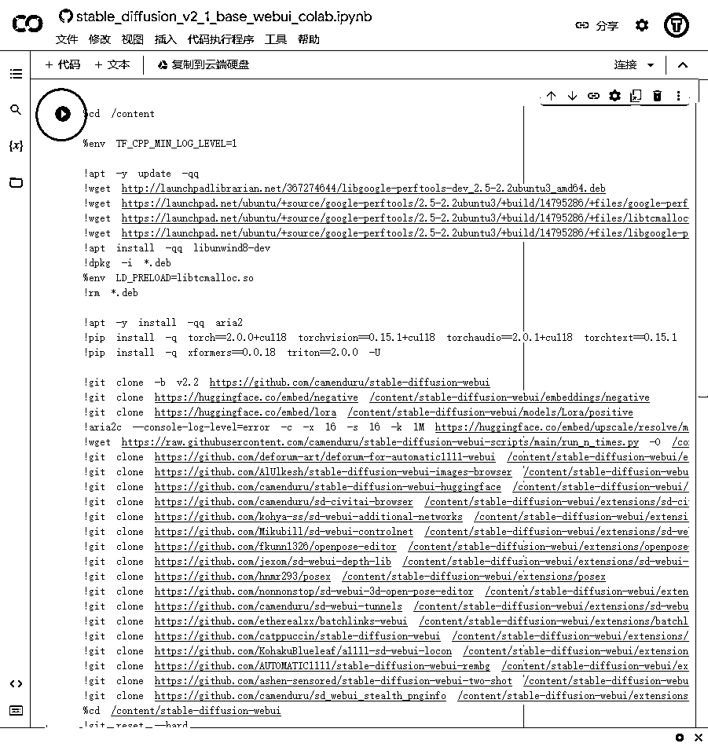
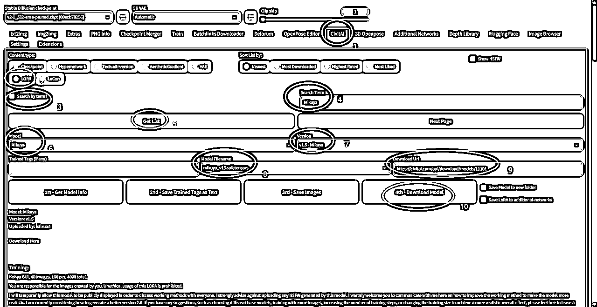
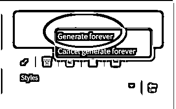
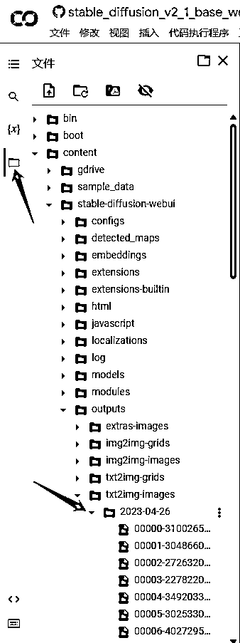
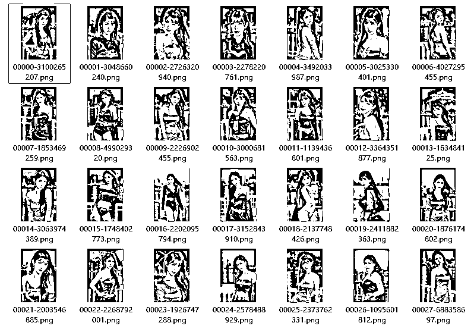

利用Colab和Stable Diffusion实现云端、免费、自动、批量、无限AI出图
来源：https://zyb2zrrrem.feishu.cn/docx/Md2KdAjbDo0cdGxGMtncyb8CnLb
我是林同，加入生财两年，理工男，坐标广州，主业工程管理，爱好健身，有健身粉几万，在做运动健身产品推广，也是工具控，懂点写代码，喜欢偷懒，擅长让工具干活，自己多点时间摸鱼，以下是正文：
背景介绍
- Stable Diffusion是目前最火的AI绘图工具，但安装使用对计算机配置有较高要求。
- google colab提供了云端环境，可以实现免费云端出图。
- AI绘图结果通常不能直接使用，大概30张中选1张能用的，因此需要大量出图，人工筛选。
- 由于colab分配给每个账户的算力有限，无法不断出图。
- 按本文方法可以利用colab和Stable Diffusion实现云端、免费、自动、批量、无限AI画图。
部署：Colab云部署Stable Diffusion WebUI
- 登录google账户，通过以下链接，打开笔记，点击运行代码块
https://colab.research.google.com/github/camenduru/stable-diffusion-webui-colab/blob/main/nightly/stable_diffusion_v2_1_base_webui_colab.ipynb

- 可能会弹出对话框，或者人机交互测试，根据提示往下走
- 等待完成资源下载和安装，直到出现几个Public WebUI Colab URL
- 这几个Public WebUI Colab URL就是部署好的Stable Diffusion WebUI操作界面地址，复制到浏览器打开


实操：Stable Diffusion 出图实操
下载大底模型
ChilloutMix 是基于亚洲人物训练集训练出来的大底模型，可以生成比较理想的亚洲人物状态
- 点击Civitai选项卡
- Content Type选择Checkpoint
- Search by term打勾
- Search Term输入chilloutmix
- 点击Get List，会从Civita中搜索并加载模型信息
- 在Model中选择chilloutmix
- 在Version中选择最新版本
- 在Model FileName中选择模型名称
- 等待Download Url中出现模型下载地址
- 点击Download Model
- 回到Colab界面，看到下载进度，等待出现Successful Downloaded说明下载完成


下载Lora模型
LoRA模型是一种可以生成出符合指定样式图像的模型，具有速度快、体积小等特点。
- 点击Civitai选项卡
- Content Type选择Lora
- Search by term打勾
- Search Term输入自己喜欢的Lora模型名称
- 点击Get List，会从Civita中搜索并加载模型信息
- 在Model中选择
- 在Version中选择版本
- 在Model FileName中选择模型名称
- 等待Download Url中出现模型下载地址
- 点击Download Model
- 回到Colab界面，看到下载进度，等待出现Successful Downloaded说明下载完成


选择大底模型
- 点击txt2img选项卡
- 点击左上角刷新大底模型
- 在左侧选择刚才下载的ChilloutMix
- 等到界面刷新

选择Lora模型
左下方展开Additional Networks
- Enable打勾启用Lora模型
- 点击Refresh Model刷新模型
- 在Model 1处选择刚才下载的Lora模型

设置参数并出图
- 输入正面提示词
- 输入反面提示词
- 选择采样方法
- 选择步数
- 选择面部修复
- 选择CFG Scale
- 修改长宽
- 点击Generate出图


提高：自动、批量、无限出图
如何实现自动出图
使用Colab出图很快，大约30秒-1分钟可以出一张，当把参数设置调试好后，在Generate按钮右键，选择Generate Forever，让程序自动出图

如何找到自动出图的图片
- 回到Colab界面
- 左侧找到文件选项卡
- 图片存放路径在/content/stable-diffusion-webui/outputs/txt2img-images/出图日期
- 双击某个图片，右侧可以打开预览

如何实现打包下载图片
回到Colab界面
- 点击停止运行Stable Duffusion WebUI代码块
- 点击+代码，新增代码块
- 复制以下代码，粘贴到代码块，把路径修改为自己图片存放路径
- 点击运行代码块，等待下方进度条走完，就自动下载
import os, tarfile
import os
from google.colab import files
def make_targz_one_by_one(output_filename, source_dir):
tar = tarfile.open(output_filename,"w")
for root,dir_name,files_list in os.walk(source_dir):
for file in files_list:
pathfile = os.path.join(root, file)
tar.add(pathfile)
tar.close()
files.download(output_filename)
#把第二个参数修改为自己图片存放路径
make_targz_one_by_one('neg_tar', '/content/stable-diffusion-webui/outputs/txt2img-images/2023-04-26')


如何实现批量出图
- 电脑安装多款浏览器，如Chrome、Edge、Firefox等
- 每个浏览器登录不同的google账号，同时操作，批量出图
如何实现无限出图
- 最简单的方法：氪金，升级Colab pro会员，增加可用gpu算力
- 准备大量google账号，或找到靠谱低价渠道购入大量账号
- 按5个浏览器计算，1分钟能出3张图，1小时可以出900张图，够够的了。